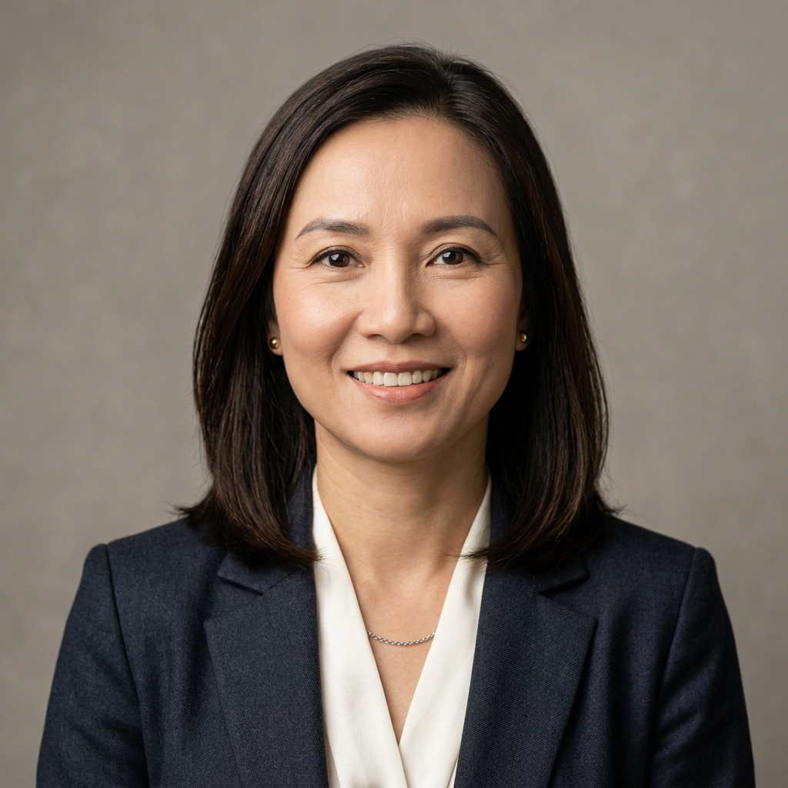
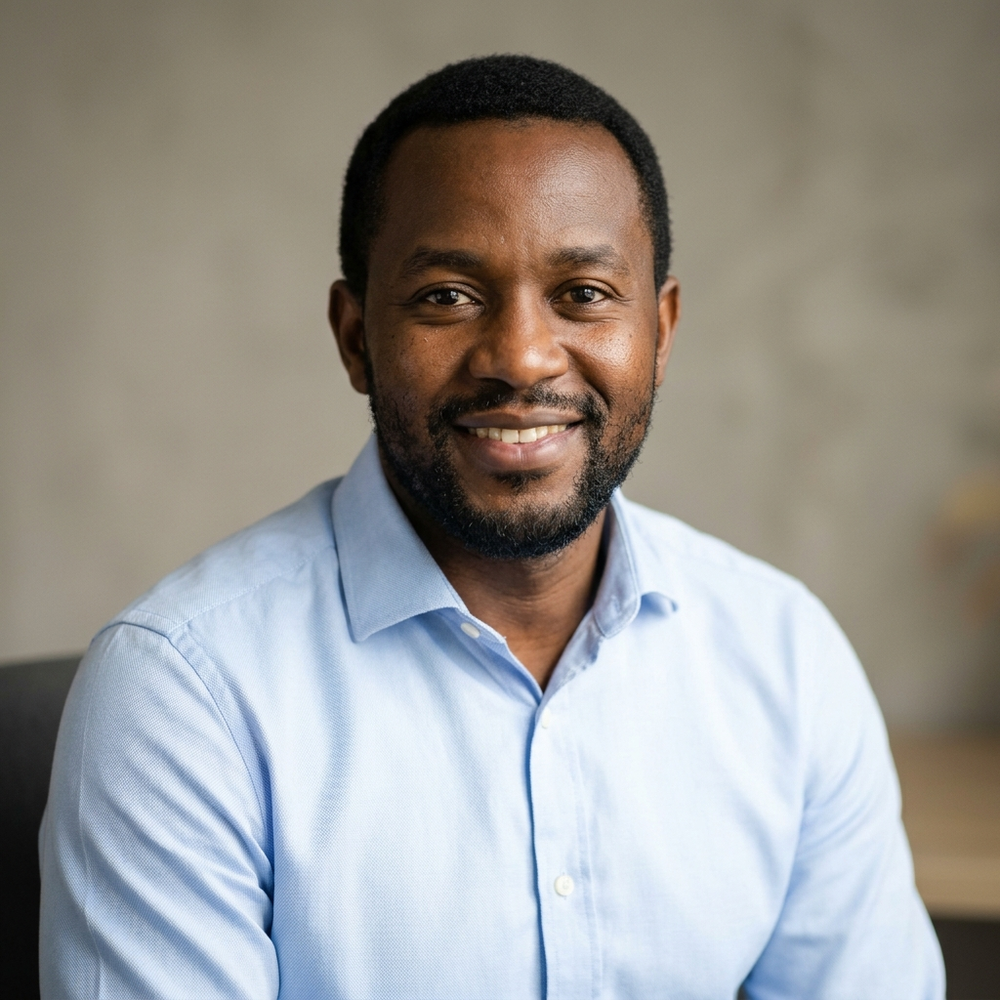
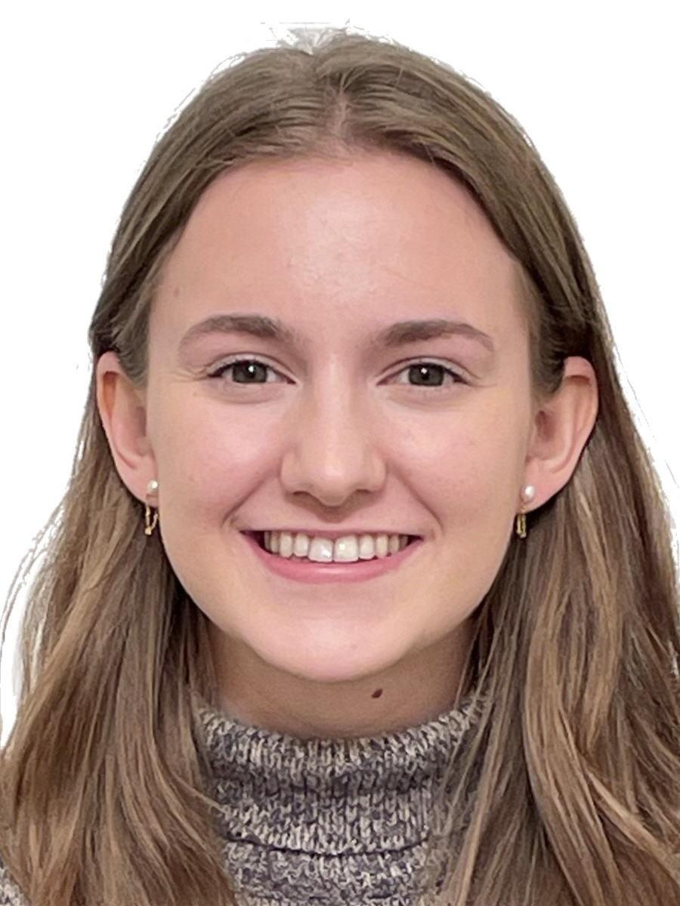
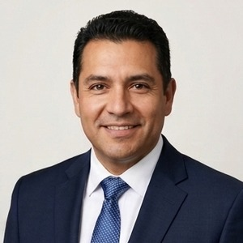
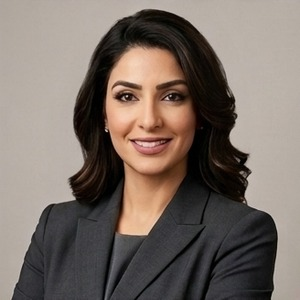
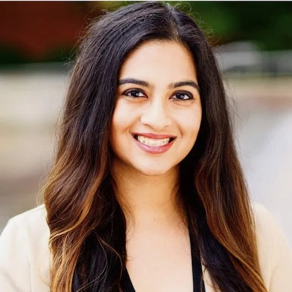
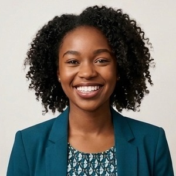
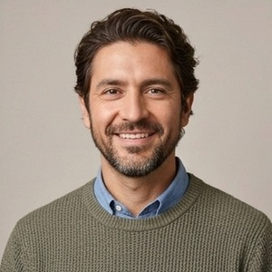
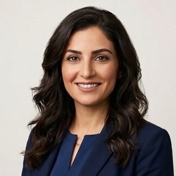

About Kandelia
"We remove barriers to opportunities so immigrant and refugee communities can flourish without compromising values, heritage or ethnicity."
Our Core Values
These values drive our daily culture, hiring practices, community advocacy, and strategic decisions.
Inclusion
We embrace diversity and believe all people have value and the right to belong. We commit to active listening and questioning assumptions.
Heart
We measure our success by the real difference we make in people's lives. We act with care, empathy, kindness, and fun along the way.
Equity
We believe in just and fair inclusion, identifying inequities and taking proactive responsibility for addressing them.
Relationships
We build strong connections with each other, partners, and the communities we serve in the spirit of genuine collaboration.
Excellence
We strive to be the best we can be in all we do, applying discipline, organization, and professionalism to our daily work.
Milestones of Belonging (1978–2028)
Fifty years of immigrant and refugee leadership in South Seattle and across King County.
Founded in Mutual Aid
Established as the Southeast Asian Refugee Support network to provide direct translation, emergency relief, and community orientation for arriving families.
Public Schools Partnership
Formed formal after-school tutoring partnerships inside high schools, ensuring bilingual homework help and credit recovery for newly arrived ELL students.
Direct Relief & Digital Access
Rapidly mobilized over $240,000 in direct emergency assistance, distributed hundreds of cellular-connected laptops, and established virtual support circles.
50th Anniversary Gala
Gathering five decades of alumni, families, educators, and community champions at the Seattle Center Pavilion for our landmark celebration.
Kandelia Staff & Leadership
Experienced educators, youth advocates, and community organizers with deep roots in King County.

Kandelia dedicated staff & leadership team
Executive Leadership

Tram Lam, MNPL
Tram has dedicated over 18 years to non-profit management, immigrant rights, and educational justice in King County. She guides Kandelia's strategic vision with deep reverence for our 50-year mutual aid heritage.

Khadar Abdi
Khadar spearheads our high school cohort models, paid summer internships, and youth leadership initiatives, focusing on culturally affirming mentorship and college-and-career pathways.
Our Dedicated Staff Team
Our multilingual team coordinates high school tutoring, adult education, and community assistance across King County.
Our Board of Directors
Passionate educators, legal advocates, finance executives, and alumni providing strategic fiduciary governance.
Anne Gerry

Allison Arena

Chris Nguyen

Sherene Thomas

Nausheen Rajan-Jinnah
Ruel Olanday Jr

Chanin Kelly-Rae

Jordan Wong

Marcela Diaz
2026 Community Impact Report
Our annual evaluation of student graduation rates, family economic mobility, and direct assistance distribution across King County.
Deep Roots, Lasting Flourish
Explore our comprehensive evaluation of student graduation rates, family economic mobility, and direct assistance distribution across King County.
- 570+ Newcomers guided through academic and civic pathways
- 95% Graduation Rate among cohort high school seniors
- $240,000+ Distributed in direct emergency family relief & rental aid
- 1,200+ Hours of bilingual adult digital literacy training delivered
Work With Us
Build meaningful careers advancing equity, youth belonging, and refugee solidarity across King County.
Staff Positions
Education Program Manager
Lead and expand Kandelia's after-school tutoring, high school cohort models, and graduation pathway initiatives for immigrant and refugee students across King County public schools.
Bilingual Family Support Specialist
Lead whole-family intake, digital literacy lab facilitation, housing stabilization referrals, and community resource navigation for newcomer parents.
Board Positions
Board of Directors – Member at Large
Kandelia is actively seeking applicants for at-large positions on its Board of Directors committed to supporting immigrant and refugee communities during a period of transition and growth. Provide governance, strategic direction, and fiduciary stewardship.
Board Treasurer & Finance Lead
Provide fiduciary oversight, review annual financial statements, advise on endowment strategy, and chair the board Finance & Audit Committee.
Contracted Opportunities
Bilingual Curriculum Consultant
Co-design culturally responsive English learning and digital literacy curriculum modules tailored to adult working parents and multi-generational learners.
Interpretation & Translation Specialist
Provide real-time interpretation for community meetings and translate vital school, legal, and resource guides into Spanish, Somali, Vietnamese, Amharic, or Arabic.
Youth Leadership
Alumni Youth Advisory Board (AYAB) Member
Kandelia accepts members for its Alumni Youth Advisory Board—open to young adults who attended Seattle Public Schools as Multilingual Learners after 2020. Provide vital youth perspective to leadership, guide program decisions, and co-design community initiatives.
Youth Leadership Intern
Paid summer leadership opportunity for immigrant and refugee high school students to co-design community outreach, plan cultural events, and shadow nonprofit directors.